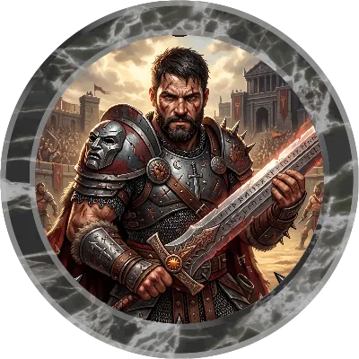

Maxime Hus est une montagne de muscles. Ses bras épais, sculptés par des années de combat dans l'arène, portent les cicatrices de cent duels. Son crâne est rasé — un souvenir de ses jours de gladiateur — et son regard perçant donne l'impression qu'il évalue constamment la meilleure façon de détruire ce qui se trouve en face de lui. Il porte une armure lourde entretenue avec soin et une épée de maître qui ne le quitte jamais.
Maxime n'a pas choisi la vie de gladiateur — il y est né. Fils d'un ancien combattant de l'arène d'Absalom, il a grandi dans l'odeur du sang et du sable, apprenant à manier l'épée avant même de savoir lire. Son père, un homme rude mais juste, lui enseigna que le combat n'était pas qu'une question de force brute — c'était un art, une danse mortelle où le plus intelligent gagne toujours.
Très vite, Maxime devint l'un des gladiateurs les plus populaires d'Absalom. Sa force prodigieuse — même pour un humain — et son charisme naturel faisaient de lui un favori du public. Mais la gloire de l'arène avait un goût amer. Chaque victoire était saluée par des vivats, mais chaque nuit, Maxime voyait les visages de ceux qu'il avait vaincus.
Le tournant survint lorsqu'un prêtre de Gorum vint le voir après un combat particulièrement sanglant. « Ta force est un don, » lui dit-il. « Ne la gaspille pas dans le sable pour l'amusement des riches. Gorum appelle ceux qui veulent que leur lame ait un but. » Ce soir-là, Maxime quitta l'arène et ne revint jamais. Il prit l'épée de son père, remercia Gorum pour sa force, et partit chercher des combats qui avaient du sens.
Maxime est un homme de peu de mots mais d'une loyauté inébranlable. Il préfère laisser parler son épée et ses poings. Derrière son extérieur rustre se cache un code d'honneur strict : protéger les faibles, ne jamais frapper un adversaire à terre, et toujours relever un compagnon tombé. Sa dévotion à Gorum est simple et directe — il ne prie pas avec des mots, mais avec chaque coup d'épée qu'il porte au nom de ce qui est juste.